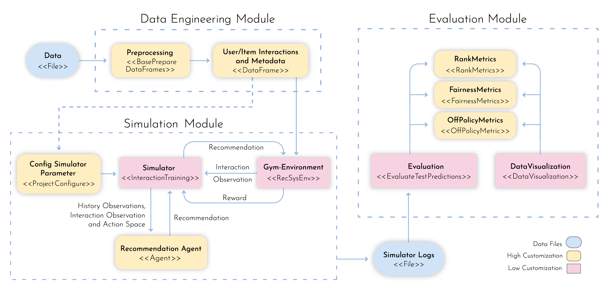

Welcome to MARS’s documentation!¶
Note
The MARS-Gym is in ‘beta’ and currently under active development. Improvements to the code or documentation are welcome!
MARS-Gym(MArketplaceRecommenderSystems Gym), a benchmark framework for modeling, training, and evaluating RL-based recommender systems for marketplaces. Three main components composesthe framework. The first one is a highly customizable module where the consumer can ingest and process a massiveamount of data for learning using spark jobs. We designed the second component for training purposes. It holdsan extensible module built on top of PyTorch to design learning architectures. It also possesses an OpenAI’s Gym environment that ingests the processed dataset to run a multi-agent system that simulates the targeted marketplace. Finally, the last component is an evaluation module that provides a set of distinct perspectives on theagent’s performance. It presents not only traditional recommendation metrics but also off-policy evaluation metrics, toaccount for the bias induced from the historical data representation of marketplace dynamics. Finally, it also presentsfairness indicators to analyze the long-term impact of such recommenders in the ecosystem concerning sensitive attributes. This component is powered by a user-friendly interface to facilitate the analysis and comparison betweenagents
{kind=link}